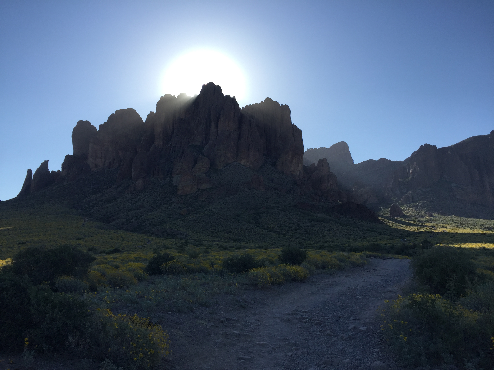

Lost Dutchman State Park - The Flatiron
Hiking Flatiron in the Superstitions is like taking Camelback and doubling everything—double the climb, double the burn, and definitely double the payoff. The trail starts out tame enough, but once you hit Siphon Draw, the real work begins. The rock here demands solid traction, and if there’s even a hint of moisture, it turns slick fast. This section feels like nature’s obstacle course: scrambling, stepping, pulling yourself up ledges, and choosing your lines carefully. Then comes the chute. It’s steep enough that you’ll probably wish you had a rope, even though most people make it up with hands, feet, and a little determination. It’s the kind of climb that makes you laugh nervously halfway through and then feel ridiculously proud once you’re past it. But the top—Flatiron itself—is where everything clicks. The view stretches across the entire valley, giving you a sweeping look at the Sierra Estrellas, South Mountain, the Superstitions, and Four Peaks. It’s one of those rare spots where the whole desert feels like it’s laid out just for you. Flatiron is tough, no doubt about it, but it’s the kind of challenge that leaves you buzzing. Between the scrambles, the exposure, and the jaw‑dropping summit, it’s one of the most unforgettable climbs in the Phoenix area.